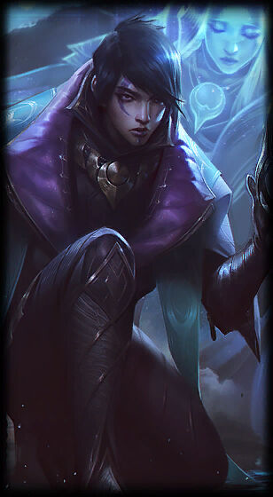
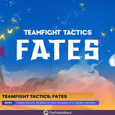

Top hatade karaktärer i LoL
Här ska jag ranka karaktärer i league of legends som jag hatar att möta eller att ha på mitt egna lag. detta är alltså mina åsikter

Här ska jag ranka karaktärer i league of legends som jag hatar att möta eller att ha på mitt egna lag. detta är alltså mina åsikter
Vladimir har kraften att få folk försvinna samtidigt som han få fullt hp, detta skulle vara ett mindre problem om han inte hade denna förmåga uppe var fjärde sekund. Han har även tillgång till hans "sanguine pool" som gör han untargetable i 2 sekunder, AKA en get out of jail free-card. Som en Adc spelare så förstör den här karaktären spelet för mig varje gång jag möter han

Lulus kit är overloadad, nästan som en ny champion. Ingen bryr sig dock eftersom att det inte är skada hon gör, hon ger skjöldar till sitt lag och bokstavligt talat ger sin adc en spruta steroider var 6:te sekund

Aphelios, även kallad "200 years", är en komplicerad champion då han är unik jämfört med alla andra karaktärer i spelet. Aphelios har inte en E Ability, istället har han 5 olika versioner av sin q och ult i form av olika vapen som han har tillgång till och shufflar genom under matchens gång. Det intressanta med Aphelios är att alla olika kombinationer av vapen han kan ha gör hans Q ability annorlunda, vilket ger han mer abilities än någon annan champion teoretiskt sett.
Sett i gamemodet Auto chess "teamfight tactics", skrämmer mig varje gång jag ser han sent i en match av tft. Man tror man lyckas wipea ens motståndares lag och så kommer hans 2-star, gunblade, duelist och elderwood Sett tillbaka från sitt magpass och oneshottar hela ens lag med 1 ult. Den här pjäsen har krossat mina drömmar i tft ett flertal gånger.
